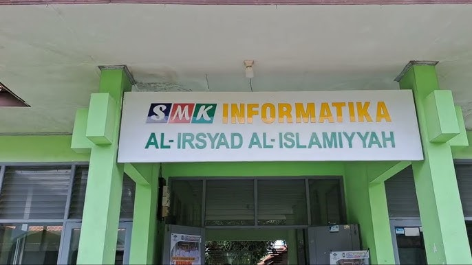
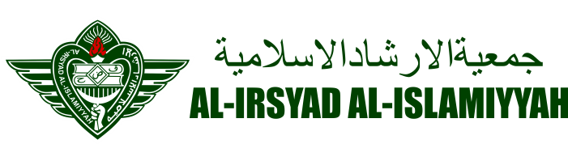

SEJARAH
Perhimpunan Al-Irsyad Al-Islamiyyah (Jam’iyat al-Islah wal Irsyad al-Islamiyyah) berdiri pada 6 September 1914 (15 Syawwal 1332 H). Tanggal itu mengacu pada pendirian Madrasah Al-Irsyad Al-Islamiyyah yang pertama, di Jakarta. Pengakuan hukumnya sendiri baru dikeluarkan pemerintah Kolonial Belanda pada 11 Agustus 1915.
Setelah tiga tahun berdiri, Perhimpunan Al-Irsyad mulai membuka sekolah dan cabang-cabang organisasi di banyak kota di Pulau Jawa. Setiap cabang ditandai dengan berdirinya sekolah (madrasah). Cabang pertama di Tegal (Jawa Tengah) pada 1917, dimana madrasahnya dipimpin oleh murid Syekh Ahmad Surkati angkatan pertama, yaitu Abdullah bin Salim al-Attas. Kemudian diikuti dengan cabang-cabang Pekalongan, Cirebon, Bumiayu, Surabaya, dan kota-kota lainnya termasuk Karawang.
Sejak didirikannya, Al-Irsyad Al-Islamiyyah bertujuan memurnikan tauhid, ibadah dan amaliyah Islam. Bergerak di bidang pendidikan dan dakwah. Untuk merealisir tujuan ini, Al-Irsyad sudah mendirikan ratusan sekolah formal dan lembaga pendidikan non-formal di seluruh Indonesia. Dan dalam perkembangannya kemudian, kegiatan Al-Irsyad juga merambah bidang kesehatan, dengan mendirikan beberapa rumah sakit. Yang terbesar saat ini adalah RSU Al-Irsyad di Surabaya dan RS Siti Khadijah di Pekalongan.
PROFIL
Berada di Jl. Perjuangan No.31, berdiri salah satu sekolah Menengah Kejuruan ini membekali siswa-siswanya dengan materi islamiyyah nya. Sehingga membiasakan siswa-siswa nya untuk selalu menerapkan sikap perilaku yang diajarkan oleh agama islam.
JURUSAN
Rekayasa Perangkat Lunak (RPL)
Siswa akan mendalami bidang pengembangan perangkat lunak seperti PEMROGRAMAN, DATABASE, WEB DESIGN APLIKASI MOBILE/ANDROID,PERANCANGAN SISTEM, dan lainnya yang relavan dengan dunia IT

Teknik Komputer dan Jaringan (TKJ)
Siswa akan mendalami bidang Jaringan (CISCO DAN MIKROTIK), LINUX SERVER serta CYBERSECURITY. Dan dibekali Sertifikat Internasional MIKROTIK MTCNA dan CISCO NETWORKING ACADEMY.

Desain Komunikasi Visual (DKV)
Siswa akan mendalami bidang desain, seperti PRINSIP- PRINSIP DESAIN, ILLUSTRASI, ANIMASI, PHOTOGRAPHY, USER INTERFACE, dan keahlian dalam menciptakan elemen desain visual yang diperlukan.
Contact Us
Instagram:https://www.instagram.com/official.skinfa/
Email: smkinformatika.crb@gmail.com
Telepon: (0231) 480140
Whatsaap: 0881-8049-238
Alamat: Jl. Perjuangan No.31 By Pass Kota Cirebon, Jawa Barat